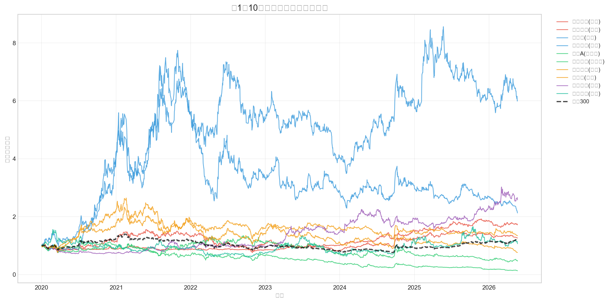
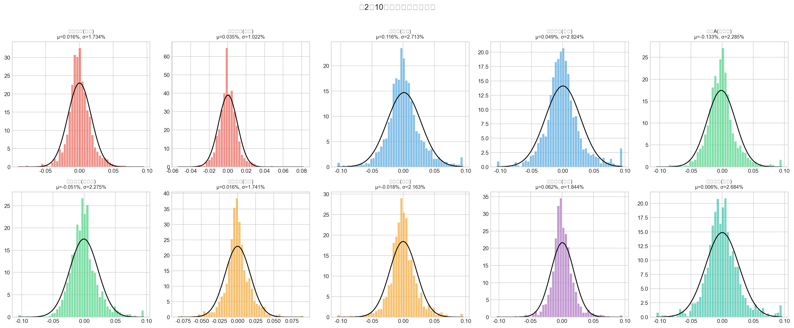
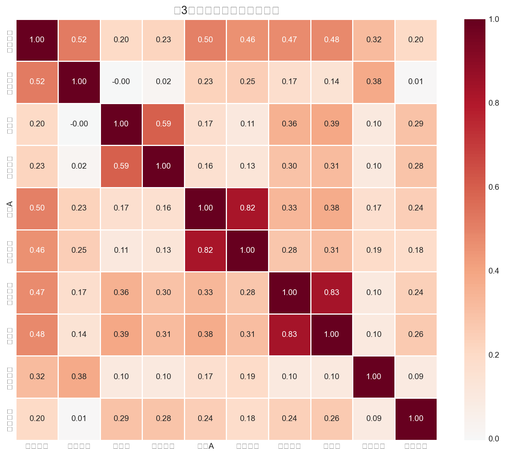
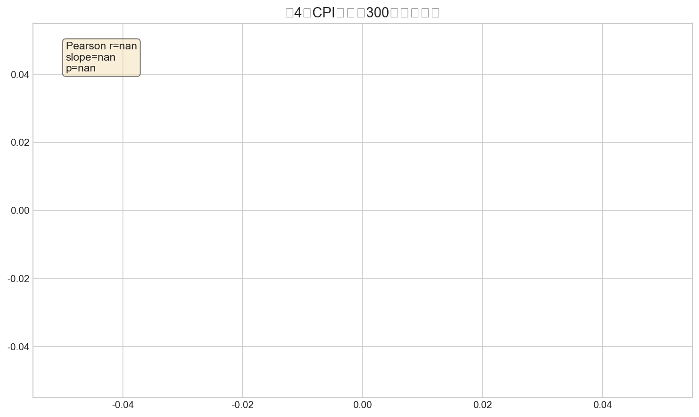
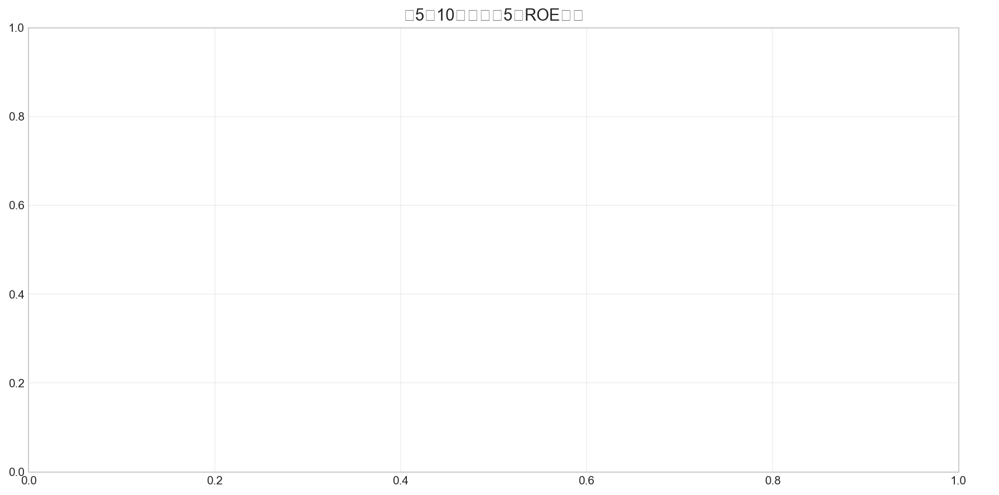
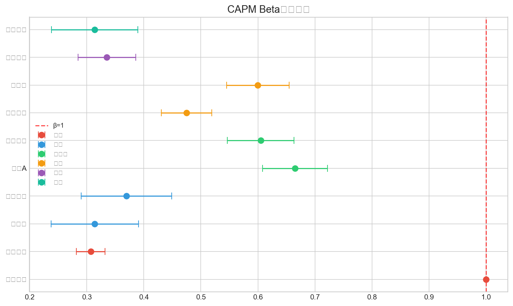
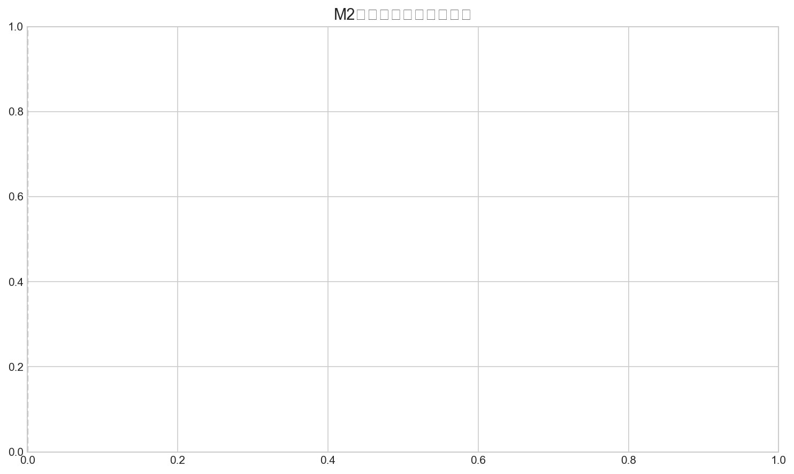

姓名：柯骋 | 学号：25210150 | 课程：数据分析与经济决策
10只A股股票，6个行业，2020-2026后复权日度行情，沪深300/中证500指数，CPI/M2宏观数据，ROE/净利润率财务数据。
6步：缺失值检测→ffill→日期统一→类型检查→重复删除→离群值标注。CSV+SQLite存储。
| 股票 | 行业 | 年化均值(%) | 年化波动率(%) | 偏度 | 峰度 | 最大回撤(%) |
|---|---|---|---|---|---|---|
| 招商银行 | 银行 | 4.02 | 27.53 | 0.268 | 3.221 | -54.64 |
| 工商银行 | 银行 | 8.93 | 16.23 | 0.451 | 5.776 | -22.40 |
| 比亚迪 | 汽车 | 29.20 | 43.07 | 0.311 | 2.111 | -56.05 |
| 长城汽车 | 汽车 | 12.26 | 44.83 | 0.462 | 2.200 | -79.74 |
| 万科A | 房地产 | -33.50 | 36.27 | 0.654 | 3.248 | -91.34 |
| 保利发展 | 房地产 | -12.78 | 36.12 | 0.557 | 3.151 | -74.20 |
| 贵州茅台 | 白酒 | 4.00 | 27.64 | 0.252 | 3.617 | -54.22 |
| 五粮液 | 白酒 | -4.61 | 34.33 | 0.095 | 3.369 | -78.05 |
| 中国石油 | 能源 | 15.68 | 29.27 | 0.197 | 5.103 | -33.59 |
| 中兴通讯 | 通讯 | 1.52 | 42.60 | 0.301 | 2.434 | -69.84 |





| 股票 | 行业 | α̂ | p值 | β̂ | R² |
|---|---|---|---|---|---|
| 招商银行 | 银行 | 0.0000 | 0.0000 | 1.0000 | 1.0000 |
| 工商银行 | 银行 | 0.0003 | 0.2600 | 0.3070 | 0.2712 |
| 比亚迪 | 汽车 | 0.0011 | 0.1194 | 0.3140 | 0.0403 |
| 长城汽车 | 汽车 | 0.0004 | 0.5899 | 0.3694 | 0.0514 |
| 万科A | 房地产 | -0.0015 | 0.0037 | 0.6651 | 0.2547 |
| 保利发展 | 房地产 | -0.0006 | 0.2168 | 0.6048 | 0.2124 |
| 贵州茅台 | 白酒 | 0.0000 | 0.9153 | 0.4752 | 0.2239 |
| 五粮液 | 白酒 | -0.0003 | 0.5207 | 0.5998 | 0.2313 |
| 中国石油 | 能源 | 0.0005 | 0.2468 | 0.3352 | 0.0994 |
| 中兴通讯 | 通讯 | -0.0000 | 0.9474 | 0.3138 | 0.0411 |

β>1：无
Alpha显著：2只。
R²：最高招商银行(1.0000)，最低比亚迪(0.0403)。

AI: CodeBuddy | 2026-05-21